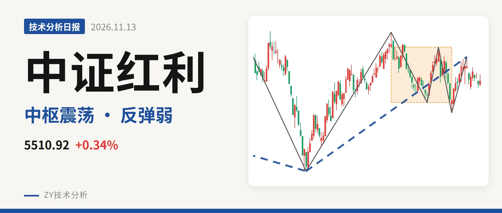
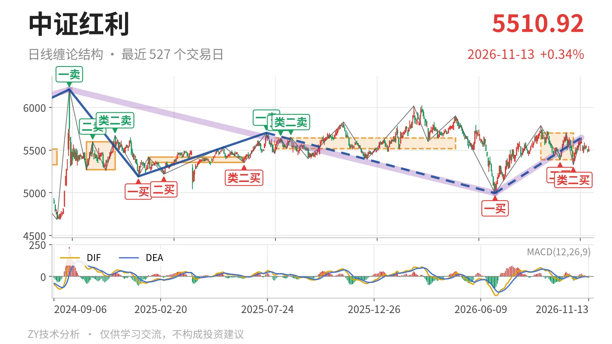
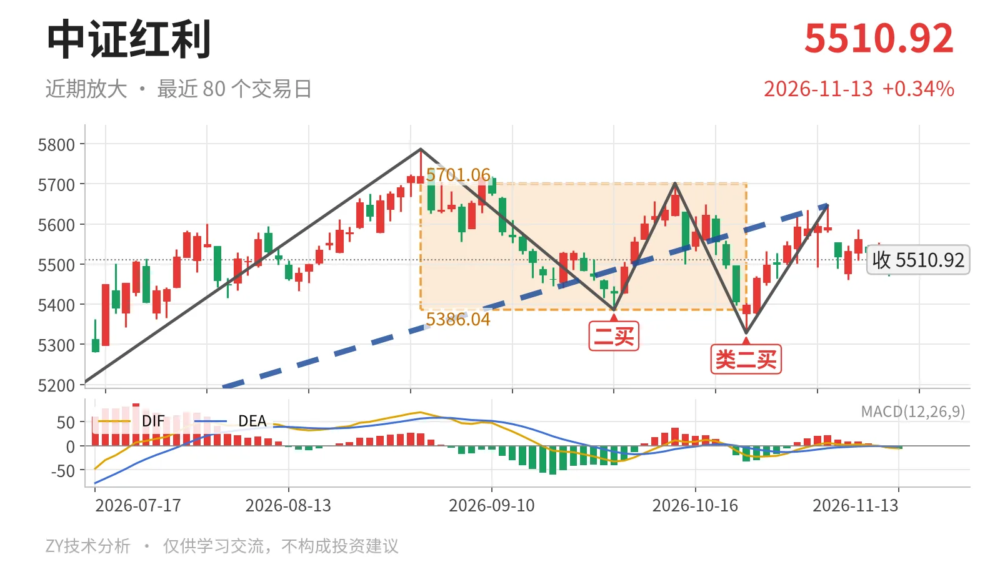

中证红利｜反弹受阻5701，回踩5386中枢下沿

最近日线中枢 5386.04—5701.06点，收盘位于中枢之内
一句话：仍在中枢内，反弹力度递减，关键看5386点。
🧭 走势结构：日线反弹段延续，更大级别仍是震荡
当前处于6月30日至11月4日上涨段内部。该段含5笔，10月23日至11月4日上涨笔已经结束，11月5日至13日7根K线尚未成笔，属于反弹后的回落。更大级别里，2024年10月8日至2026年6月30日下跌段没有结束，与6月30日以来的上涨段重叠，因此更接近更大级别震荡，而不是单边转强。2025年7月23日至2026年6月30日下跌段还在延续，当前反弹还没扭转这个结构。

📍 中枢与位置：处于最近中枢内部，重心略下移
最新收盘 5510.92点 在9月1日至10月23日中枢 5386.04—5701.06点 之内，位于中轴5543.55点下方。该中枢尚未完成；前一个2025年8月4日至2026年4月30日中枢中轴为5579.23点，最近中轴略低。最新价距下沿约125点，距上沿约190点，位置更靠近下沿，说明短线重心没有上移。
🔍 买卖点：类二买未破坏，上方一卖压力仍在
最近的10月23日类二买 5328.30点 后走出上涨笔至5646.01点，11月5日以来最低5460.31点，未跌破5328点，该买点结构还没被破坏。9月29日二买5386.04点与最近中枢下沿重合，买点整体抬高。上方2025年7月23日一卖5702.03点与中枢上沿基本重合，8月12日二卖5639.99点也形成压制，11月4日高点5646.01点小幅越过二卖，但未碰到一卖。

⚡ 背驰：10月23日新低不新弱，反弹动能未转强
最关键的对比是10月14日至10月23日下跌笔与9月1日至9月29日下跌笔。前者低点5328.30点低于后者5386.04点，但绿柱面积从561缩小到53，DIF低点由-32.7抬升到-20.4，属于新低不新弱，这是10月23日类二买的结构依据。不过11月13日DIF为-5.8，仍在零轴下，MACD柱为-6.6，背驰后的反弹没有把动能拉回多头一侧，暂时只能按反弹对待。
🧭 关键位置：先看5386下沿，再看5701上沿
若当前回落不破 5386点附近，最近中枢震荡仍成立，短线偏弱但不破坏结构；若跌破5386点后反抽回不到该点上方，则构成三卖，6月30日以来的上涨段面临结束。若重新站上 5701点附近 并站稳中枢上沿，则9月以来的下调更可能只是中枢扩展。10月23日低点5328点若被跌破，类二买结构破坏，回落级别会扩大。在站上5701点之前结构偏弱，在跌破5386点之前仍属中枢震荡，整体中性偏弱。
⚠️ 本文为基于公开行情数据的缠论技术结构记录，由程序自动计算并生成，仅供学习交流，不构成任何投资建议。市场有风险，投资需谨慎。